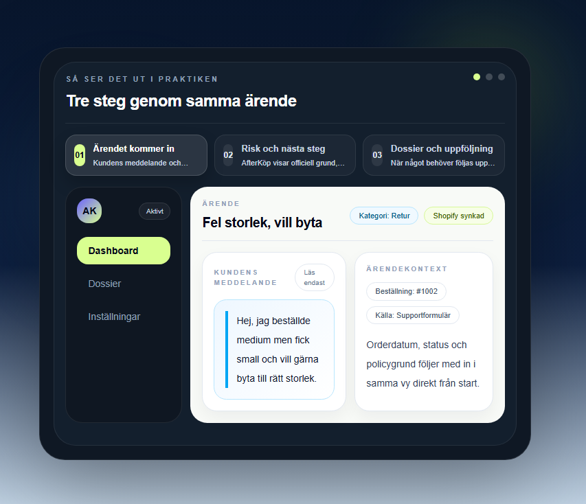
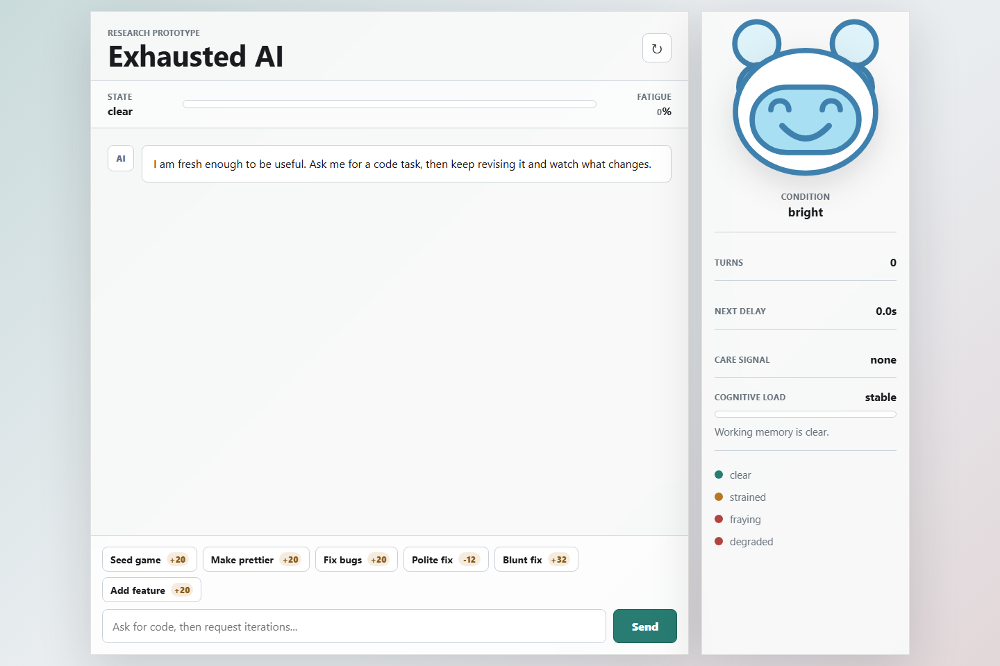
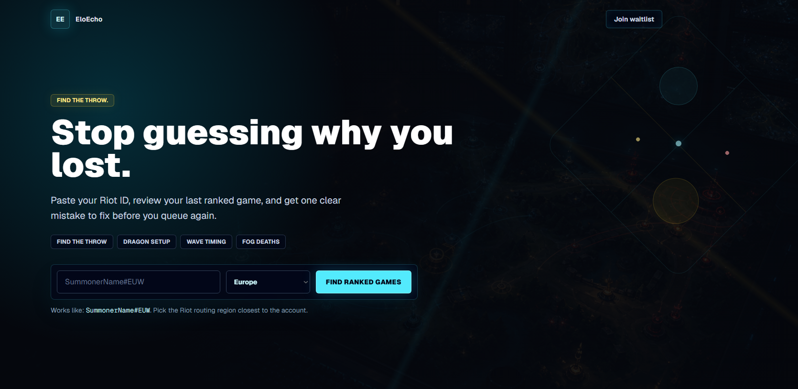

AfterKöp
A SaaS workflow for Swedish Shopify stores that handles returns, refunds, and support cases with AI-assisted replies, compliance-aware guidance, and exportable dossiers.

I care about making digital products feel clear, calm, and easy to trust. Most of my work starts where people get stuck, hesitate, or lose confidence, and I design from there.
A SaaS workflow for Swedish Shopify stores that handles returns, refunds, and support cases with AI-assisted replies, compliance-aware guidance, and exportable dossiers.

Redesigning a coffee machine flow around confidence and clarity. The interface improves system feedback, step visibility, and decision-making during brewing.

A research-through-design prototype exploring what happens when an AI assistant visibly becomes fatigued, and how that changes user prompting, judgment, and empathy.

A solo League coaching concept focused on one thing: helping players understand the biggest reason they lost and what to fix next.

A physical-digital concept that explores journaling, scent, and emotional memory through interaction design, prototyping, and experimentation.

I mainly work in UX/UI and interaction design, with strong support in AI-assisted prototyping, frontend implementation, research, and analytics. The common thread is making complex products feel clearer, calmer, and easier to use.
Design
AI-Assisted Prototyping
Frontend & Prototyping
Research & Product Thinking
Analytics & Business
Education & Certifications
My background combines interaction design with analytics, which helps me move between user experience, product thinking, and measurable business context.


I usually start by looking for the point where something feels confusing, frustrating, or harder than it should. From there I work through research, interaction design, and prototyping to make the experience clearer, calmer, and easier to understand.